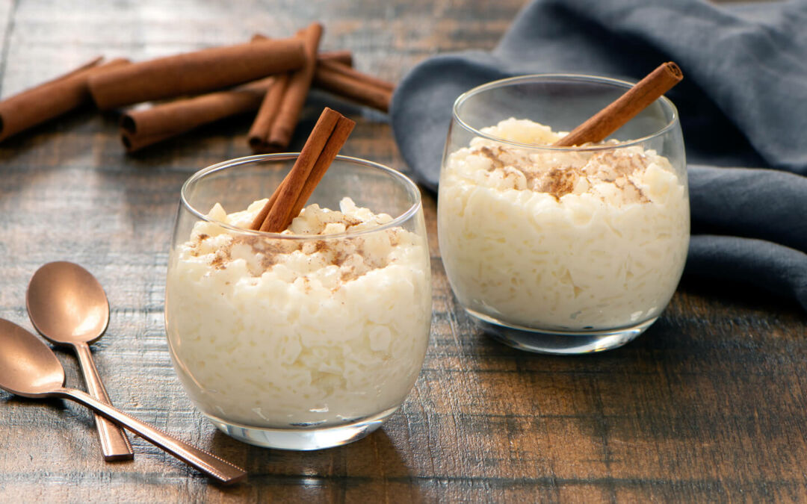

Arroz con leche
8 servings

Utensils
- Tempered glass bowl
- 8 individual molds for dessert
Ingredients
- 3/4 cup of rice
- 1 liter of milk
- 2 tablespoons of sugar
- 2 teaspoons of vanilla
- 1 cinnamon stick
- Small pieces of lemon peel (several)
- Ground cinnamon (for garnish)
Preparation
- In the bowl, place 3/4 liter of milk, the lemon peels, and the cinnamon stick. Microwave on high power (100%) for 5-6 minutes. Then add the rice.
- Dissolve the sugar with the vanilla in the remaining 1/4 liter of milk and pour it over the rice.
- Stir and cook for 15-16 minutes on medium-high power (70%). Stir once halfway through the cooking time.
- Remove from the microwave and sprinkle with ground cinnamon.
- If desired, divide into 8 individual molds.
Cooking time :
| Microwave Power (100% power) |
Cooking time |
| 650-700 watts
|
5-6 minutes |
| 600 watts |
6-7 minutes |
| 500 watts
|
7-8 minutes |
| Microwave Power (70% power) |
Cooking time |
| 650-700 watts
|
15-16 minutes |
| 600 watts
|
16-17 minutes |
| 500 watts |
17-18 minutes |